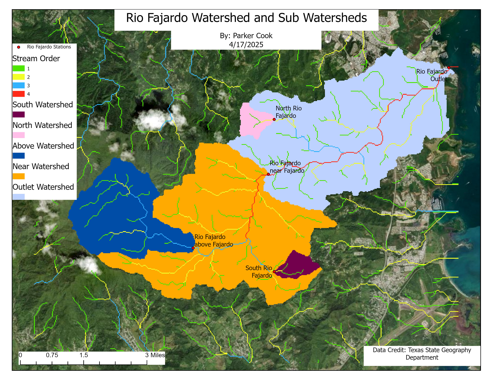
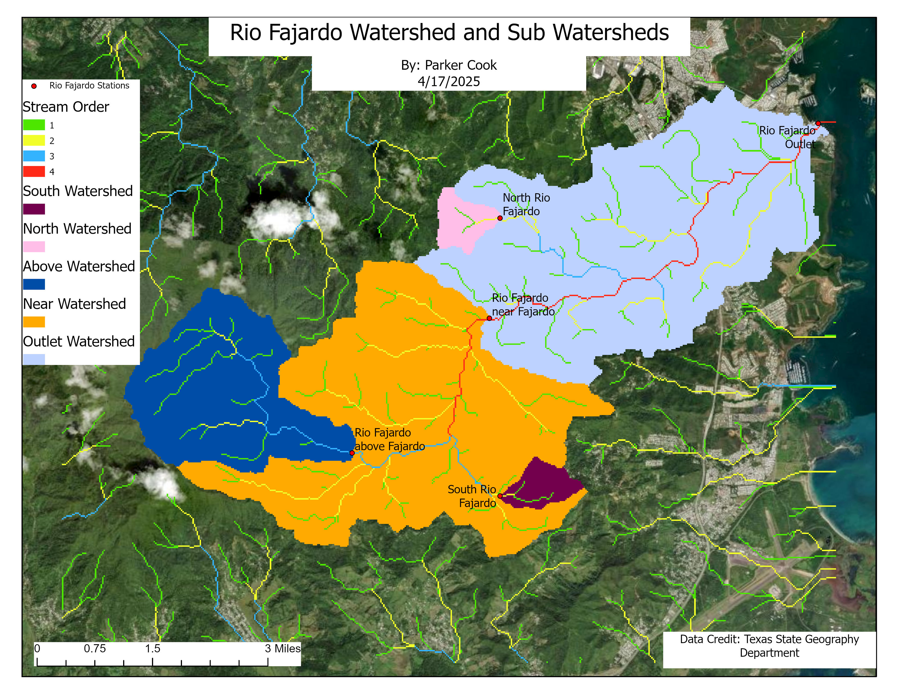

I am a recent GIS graduate from Texas State University with experience in spatial analysis, web mapping, and environmental applications of GIS. My interests include energy resource management, suitability modeling, and geospatial decision support.
Featured GIS Projects

Interactive Web Mapping Application
ArcGIS JS API based web map featuring buffer analysis, custom popups, and user interaction.
View Live Map
Field Maps Integration
Static map of San Marcos trail networks developed using high-accuracy GNSS data collected in ArcGIS Field Maps, with an accompanying interactive experience built in Esri Experience Builder.
View Interactive ExperienceSuitability Analysis
Multi-criteria suitability models evaluating land use, slope, and infrastructure proximity buffers to identify optimal sites for different subjects.
 

Modeling
Surface modeling of proposed cell tower sites to estimate coverage areas, leveraging DEMs and shaded relief data. Hydrological modeling employed to understand water movement and environmental considerations.

Spatial Crime Pattern Analysis
Hotspot and density analysis of violent crime rates using census and municipal datasets.
Interpolation
Spatial interpolation of environmental and census data using Local Polynomial, and Inverse Distance Weighting methods to estimate values across unsampled locations and support geospatial analysis.

Network Analysis
Network Analysis used to create cost distance maps as well as ideal routing in multiple scenarios.


Other Projects
Various other projects including digitization methods, diffusion modeling, and viewshed analysis suitability modeling.
Technical Skills
- GIS: ArcGIS Pro, ArcGIS Online, Field Maps
- Analysis: Suitability Modeling, Surface Modeling, Interpolation, Buffer
- Web GIS: Leaflet, OpenStreet, ArcGIS JS API
- Programming: JavaScript, HTML, CSS
- Data: Census, Environmental, Raster & Vector
Contact
Email: cook.parker@outlook.com